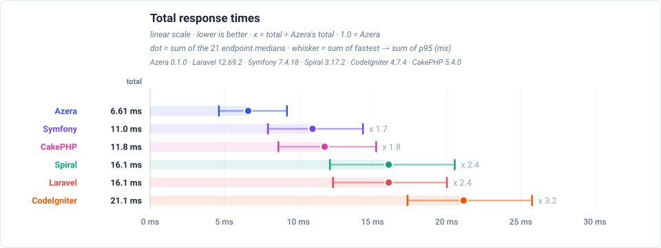
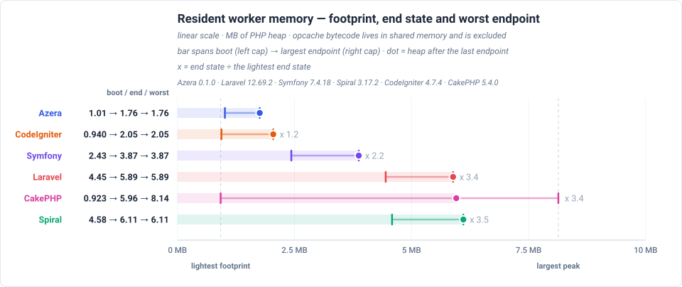
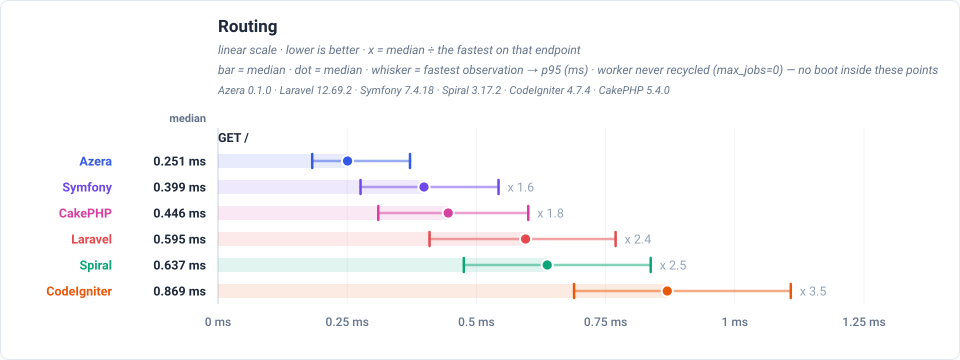
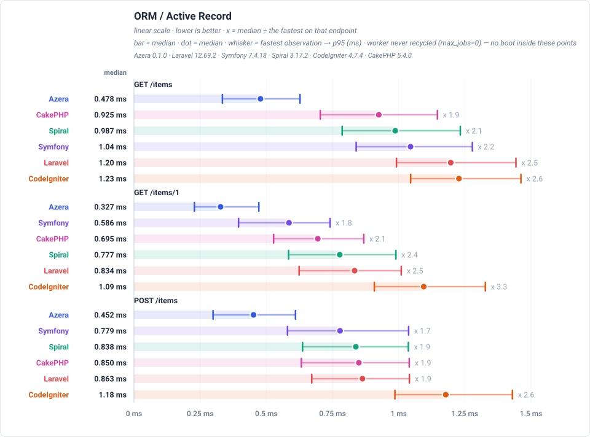
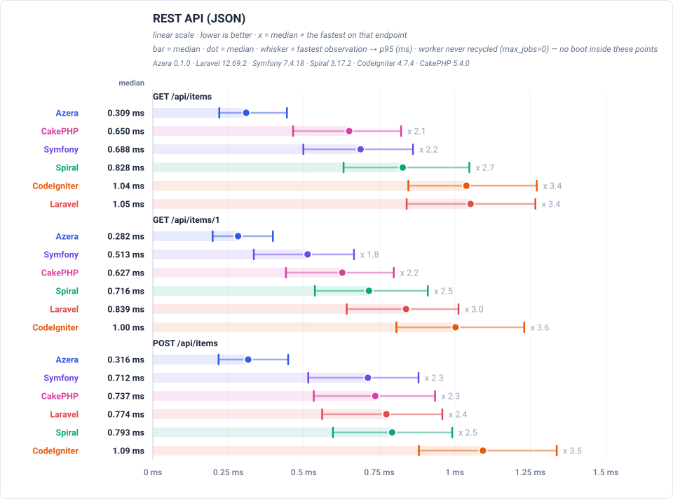

Feature benchmarks
GET / — dispatches a plain request through the router and returns a rendered template — no database access.

GET /items — loads one page of the 1,000 seeded rows through each framework's ORM / Active Record layer: 20 items plus a COUNT for the pagination total.

GET /api/items — serves the same page of items as a JSON response rather than HTML, which adds serialization to the ORM work.

Latency by endpoint (ms, trimmed mean — lower is better) — the worker is never recycled (max_jobs=0), so each number is the measured request with no boot in it
| Request | Workload | Azera | Laravel | Symfony | Spiral | CodeIgniter | CakePHP |
|---|---|---|---|---|---|---|---|
GET / | no DB — routing + template only | 0.267 | 0.611 | 0.415 | 0.658 | 0.893 | 0.461 |
GET /items | 20 of 1000 items (page 1, + COUNT) | 0.501 | 1.23 | 1.05 | 1.02 | 1.25 | 0.944 |
GET /items/1 | 1 item by id | 0.367 | 0.844 | 0.578 | 0.812 | 1.08 | 0.737 |
POST /items | 1 row upserted (sentinel #999999) | 0.459 | 0.878 | 0.790 | 0.845 | 1.20 | 0.846 |
GET /items-qb | 20 of 1000 items (page 1, + COUNT) | 0.444 | 0.895 | 0.669 | 0.803 | 1.23 | 0.734 |
GET /items-qb/1 | 1 item by id | 0.379 | 0.741 | 0.478 | 0.743 | 1.10 | 0.652 |
POST /items-qb | 1 row upserted (sentinel #999997) | 0.428 | 0.859 | 0.698 | 0.814 | 1.32 | 0.752 |
GET /api/items | 20 of 1000 items as JSON | 0.328 | 1.09 | 0.671 | 0.849 | 1.05 | 0.672 |
GET /api/items/1 | 1 item by id as JSON | 0.313 | 0.855 | 0.512 | 0.776 | 1.03 | 0.652 |
POST /api/items | 1 row upserted (sentinel #999998) | 0.319 | 0.784 | 0.714 | 0.832 | 1.11 | 0.755 |
GET /features/aop | no DB — interceptor pipeline | 0.447 | 0.770 | 0.596 | 0.988 | — | — |
GET /features/cache | COUNT(*) of 1000 rows, cached 10s (miss = query) | 0.242 | 0.599 | 0.372 | 0.704 | 0.811 | 0.391 |
GET /features/log | no DB — buffered log handlers | 0.255 | 0.571 | 0.354 | 0.691 | — | — |
GET /features/retry | no DB — retry policy | 0.247 | 0.576 | 0.367 | 0.710 | — | — |
GET /features/pipeline | no DB — middleware pipeline | 0.253 | 0.590 | 0.363 | 0.682 | — | — |
GET /features/db-events | 1 event row INSERTed per request | 0.366 | 0.838 | 0.617 | 0.941 | 1.20 | 0.684 |
GET /features/events | no DB — in-process listeners | 0.327 | 0.725 | 0.468 | 0.783 | 1.13 | 0.562 |
GET /features/validation | no DB — validator run | 0.277 | 1.29 | 0.510 | 0.747 | 1.10 | 0.526 |
GET /features/config | no DB — config lookup | 0.242 | 0.577 | 0.352 | 0.695 | 0.815 | 0.366 |
GET /features/request-scoped | no DB — scoped service resolve | 0.236 | 0.582 | 0.355 | 0.716 | 0.778 | 0.374 |
GET /features/rate-limit | no DB — cache-backed limiter | 0.233 | 0.598 | 0.365 | 0.723 | 0.818 | 0.395 |
Server floor — real RoadRunner over loopback: a bare resident worker that renders a fixed string (floor-rr) measures the IPC + server floor every row below also pays. Only differences larger than this floor are framework differences.
Full comparison
This page is a summary. The complete report, with every feature chart and the endpoint table for all six frameworks, is published at: